A lot has changed since GammaOS Nano 1.4. This page is a quick, user-facing tour of the new features grouped by area. Where a setting or menu is named, the full details live on that area's own page.
Themes and the home look
- DSi Dark Theme. The DSi theme now has a dark variant. Turn it on in Theme Settings while the DSi theme is active and the whole DSi look (carousel, top screen, info page, dialogs, status bar and tile cards) flips to light text and icons on a dark field, live.
 - DSi accent colour support. The DSi theme now follows the Colour setting. Your accent recolours the glossy list buttons, scrollbar, carousel selection frame, back button, scroll arrows and dialog borders.
- Font scaling in every theme. The Font Size setting now scales UI text live in XMB, DSi and Minima, and word-wrapped text reflows as you change it.
- DSi accent colour support. The DSi theme now follows the Colour setting. Your accent recolours the glossy list buttons, scrollbar, carousel selection frame, back button, scroll arrows and dialog borders.
- Font scaling in every theme. The Font Size setting now scales UI text live in XMB, DSi and Minima, and word-wrapped text reflows as you change it.
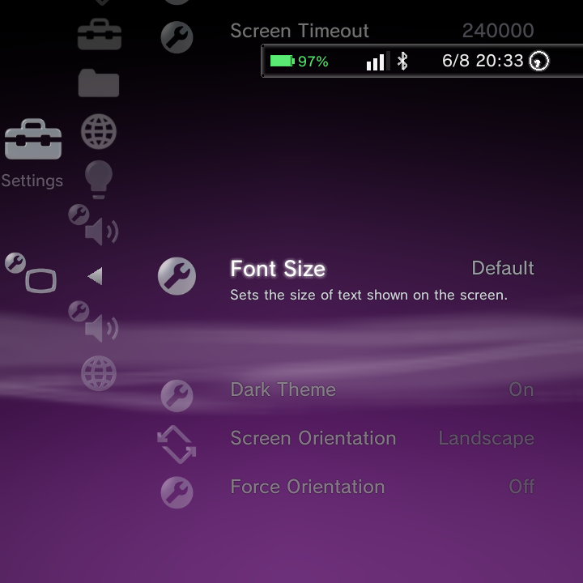
- Theme Settings only shows what applies. Rows that belong to a theme you are not using are hidden, so the menu stays short and relevant. - Show, hide and reorder home categories. A new Home Categories editor in Theme Settings lets you hide columns you never use and reorder them. Drill into a category to hide individual rows too. Quick Menu stays first, Settings can't be hidden, and at least one category must stay visible.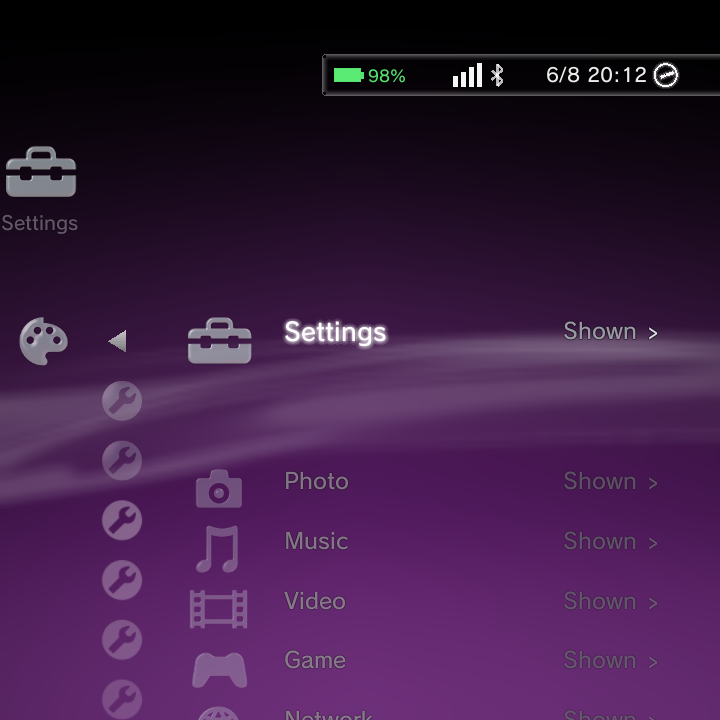
- Distinct icons for Applications and Pinned Apps. The Applications row now uses a grid icon and the new Pinned Apps row a push-pin, so they are easy to tell apart. - Heart icon for Favourites. The Favourites row now uses a procedurally-drawn heart (glass on XMB, flat theme-tinted glyph elsewhere).
- Heart icon for Favourites. The Favourites row now uses a procedurally-drawn heart (glass on XMB, flat theme-tinted glyph elsewhere).
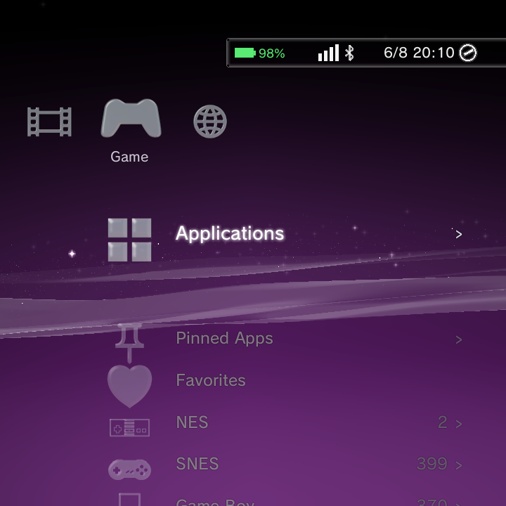
- Larger, readable sort/pin banner. The centred banner that confirms a game sort, folder view or pin now renders at a readable size with a solid backdrop in all three themes.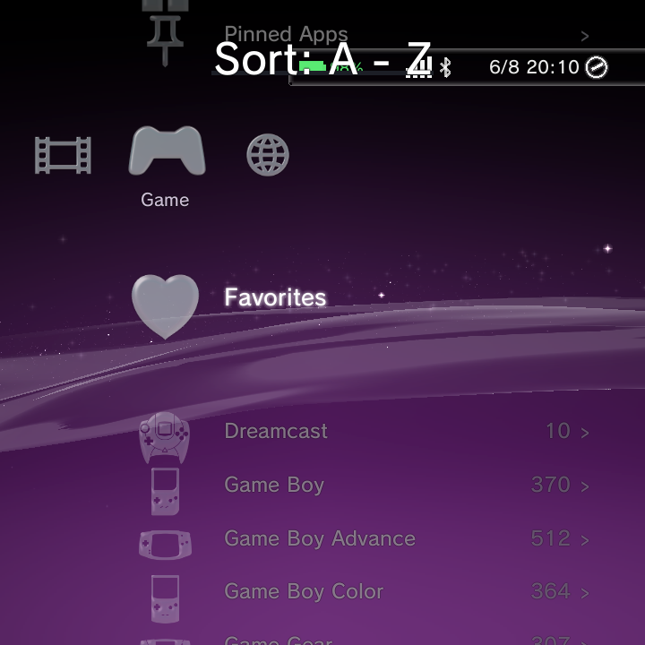
- Clocks honour your Time and Date Format. The DSi top-screen clock and the Minima status-pill clock now follow 12/24-hour Time Format, and the DSi date follows your Date Format.
Minima
- Long names scroll by default. Long game and app names keep their normal size and scroll on the focused row instead of shrinking. You can still pick Shrink to Fit in Theme Settings.
 - Wave opt-in. The XMB Wave toggle now works in Minima as an alternative to the plain black canvas, and the choice persists across restarts.
- Portrait scaling. On portrait panels Minima scales by the short edge, so text and density track the narrow dimension.
- Button-legend circles at large fonts. The A/B/Y glyph badges now size correctly at large font settings, with letters that fit inside their rings.
- Wave opt-in. The XMB Wave toggle now works in Minima as an alternative to the plain black canvas, and the choice persists across restarts.
- Portrait scaling. On portrait panels Minima scales by the short edge, so text and density track the narrow dimension.
- Button-legend circles at large fonts. The A/B/Y glyph badges now size correctly at large font settings, with letters that fit inside their rings.
Portrait and small panels
- XMB portrait scaling. On small portrait panels XMB scales up so icons and text stay readable, and the User Guide uses the full screen width.
- XMB option-panel marquee. On portrait panels the XMB option side panel now marquee-scrolls the focused row instead of truncating long labels.
Dual-screen (DS-style) devices
- DSi single-screen status bar. On single-screen 4:3 DSi layouts a top status bar now reserves space for the clock, Wi-Fi, Bluetooth and date.
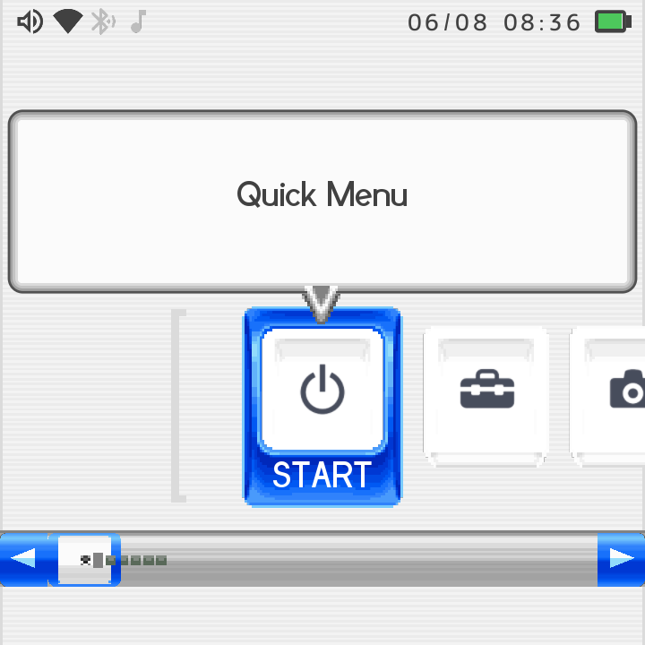
- Full-width scrollbar and paged game info. On single-screen DSi the carousel scrollbar spans the whole panel edge to edge, and Game Information pages across L/R turns instead of overlapping. - Dual-screen settings. New DSi rows: Dual Screen (Auto / Top+Bottom / Carousel-Only) and Screen Gap to tune the spacing between stacked screens on portrait panels.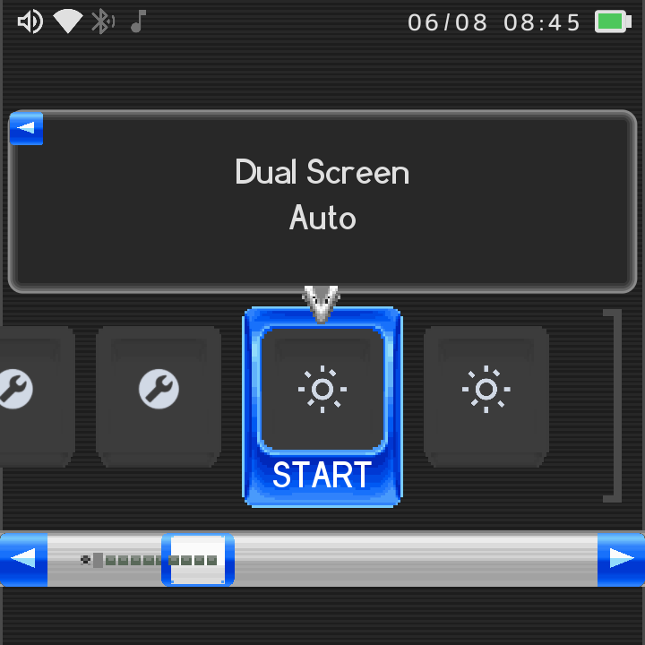
- Dual-screen User Guide. The DSi User Guide now spans both screens as a full-width paged reader instead of the cramped info dialog.Slide clock (RG Rotate)
- Slide clock over running apps in DSi and Minima. Closing the device shows the PSP-style slide clock over a running game in DSi and Minima too, not just XMB.
- Slide clock uses your background. In home/wallpaper mode the slide clock now shows your wallpaper or the theme's own background behind it instead of the XMB wave.
Game library
- Global Favourites. Star any game with Add/Remove from Favorites in its Options menu. A single cross-system Favorites list appears under Game with your first star and disappears with your last.
 - Collections. Group games from any system into named Collections that appear under Game. Create and manage them from a game's Options menu.
- Collections. Group games from any system into named Collections that appear under Game. Create and manage them from a game's Options menu.
 - Rename / Edit Title. Rename any game to override its filename. The new name shows everywhere (lists, Recently Played, search, Information) and is used as the scraper search query, so titles the scraper can't match by filename can be renamed and then scraped.
- Rename / Edit Title. Rename any game to override its filename. The new name shows everywhere (lists, Recently Played, search, Information) and is used as the scraper search query, so titles the scraper can't match by filename can be renamed and then scraped.
 - Scraped title replaces the filename. Once a game is scraped, its matched title shows in the Game category and search, and title-sort follows it. A manual rename still wins over the scraped title.
- Set custom box art. Pick any image from your Photos as a game's cover with Set Boxart. It appears immediately in every theme. Reset Boxart removes it.
- Scrape one game with a custom name. Scrape with Custom Name... re-scrapes just that game using a name you type, without renaming the file.
- Scraped title replaces the filename. Once a game is scraped, its matched title shows in the Game category and search, and title-sort follows it. A manual rename still wins over the scraped title.
- Set custom box art. Pick any image from your Photos as a game's cover with Set Boxart. It appears immediately in every theme. Reset Boxart removes it.
- Scrape one game with a custom name. Scrape with Custom Name... re-scrapes just that game using a name you type, without renaming the file.
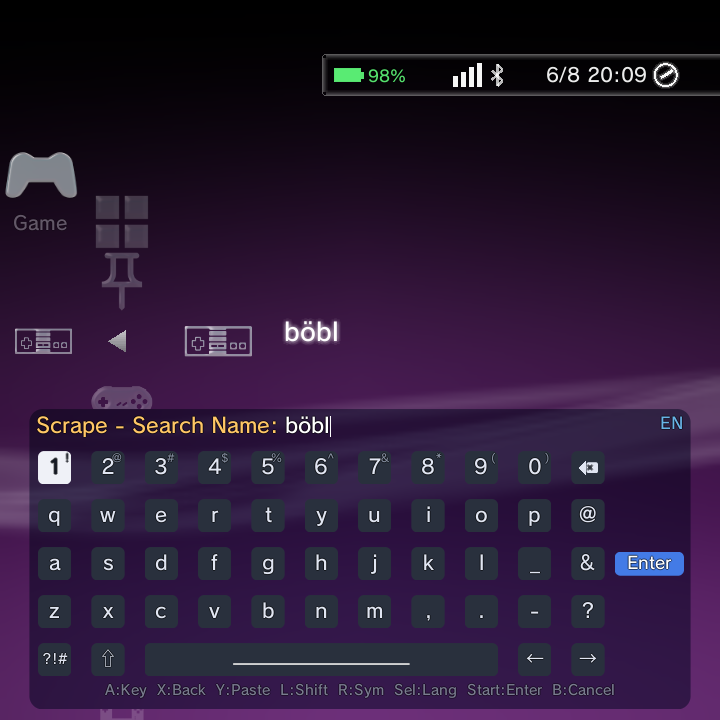
- Game sort (Y). Press Y in the Game category to cycle the system tile order: Default, A to Z, Most Games, By Manufacturer. It persists and never reorders your actual collection. - Multi-disc .m3u grouping. Multi-disc games referenced by a
- Multi-disc .m3u grouping. Multi-disc games referenced by a .m3u playlist now group into one launchable entry instead of listing every disc. On by default.
- Subfolder launch fix and optional recursive scan. Games in subfolders launch correctly with standalone emulators, and you can turn on Scan ROM Subfolders (Settings > GammaOS Toolbox) to scan up to six levels deep. One level by default.
- Bulk auto-add systems (ES-DE style). Auto-add Systems from Folder imports every recognised system from a ROMs root in one pass, linking to built-ins or creating new systems and skipping empty/media folders.
 - Missing-emulator warning. If a game's core or app is not installed, Nano shows a toast instead of black-screening.
- Manage Game System shortcut. Press Options on a system row under Game and choose Manage Game System to jump straight to its editor.
- Missing-emulator warning. If a game's core or app is not installed, Nano shows a toast instead of black-screening.
- Manage Game System shortcut. Press Options on a system row under Game and choose Manage Game System to jump straight to its editor.
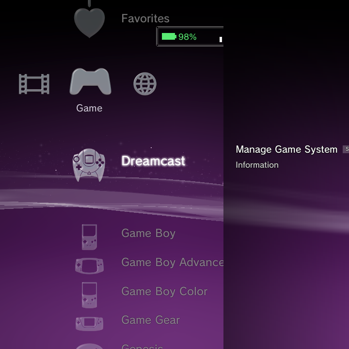
- See where default ROM folders live. The Scan Folders screen now lists the built-in default folders (like ROMs/nes/) with their game counts, so you know where to drop ROMs. - Confirm before removing a scan folder. Removing a scan-source folder now shows a Cancel / Remove Folder confirmation with the folder path.Apps and home
- Pin apps to the home. Press Y on any app to pin it. A new Pinned Apps row appears in the Game column with your apps' real icons, kept across restarts.
 - Show All Apps and Refresh. The Applications Options menu adds Show All Apps (include system utilities) and Refresh Applications List (rescan now). Newly installed or uninstalled apps update immediately.
- Show All Apps and Refresh. The Applications Options menu adds Show All Apps (include system utilities) and Refresh Applications List (rescan now). Newly installed or uninstalled apps update immediately.
 - Store-installed apps and RetroArch listed. Apps installed from Google Play, F-Droid or Aurora now show in the default Applications list, and RetroArch appears there so you can open its UI directly.
- Keep Running in Background. An app's Options menu has a Keep Running in Background toggle so tools like music players or file managers aren't force-stopped when you exit.
- Store-installed apps and RetroArch listed. Apps installed from Google Play, F-Droid or Aurora now show in the default Applications list, and RetroArch appears there so you can open its UI directly.
- Keep Running in Background. An app's Options menu has a Keep Running in Background toggle so tools like music players or file managers aren't force-stopped when you exit.
 - Files app with controller navigation. The standard Files (DocumentsUI) app is in Applications and is fully d-pad navigable; it focuses the first item on load and keeps focus on-screen.
- GammaBrowser bundled. A web browser now ships in all Nano builds, not just TV builds.
- Files app with controller navigation. The standard Files (DocumentsUI) app is in Applications and is fully d-pad navigable; it focuses the first item on load and keeps focus on-screen.
- GammaBrowser bundled. A web browser now ships in all Nano builds, not just TV builds.
Media
- Portrait music player. On tall portrait panels the Now-Playing view switches to a vertical phone-style layout: a large centred album jacket, title and artist below, a full-width seek bar and controls under it.
- Touch seek bar. Tap or drag the seek bar to jump (local tracks). It previews while dragging and commits on release.
- Wallpaper scrim behind the player. With a custom wallpaper set, a dark scrim keeps the art, text and controls readable over busy images.
- Delete a track without leaving the player. Deleting the current track now keeps the music player open and moves to the next track instead of dropping you to the home menu.
- Folder view for Photos, Videos and Music. Press Y to cycle sort modes; the final mode groups each library by parent folder. Persisted per library.
- Real bulk photo delete. Deleting a photo group (by folder, month, year) or several checked photos now permanently removes the files. (Bulk photo copy was removed because the clipboard holds one path; single-photo copy still works.)
- Video custom icon. In the video player, press Options > Change Icon to grab the current frame as that video's column thumbnail.
- Video wallpaper hover preview. When choosing a video wallpaper, the focused clip plays a live preview in its grid cell before you pick it.
- Adjustable wallpaper dimming. A Wallpaper Dimming setting (0-70%, default 25%) adds a scrim over photo and video wallpapers so bright images don't wash out the icons and text.

drastic-nano (DS emulation)
- General overlay page. The in-game overlay now opens to a General tab by default, gathering everyday actions: Brightness, Performance, Restart Game, Exit Game, Power Off and Reboot.
- Adjustable screen layout. New Layout X Offset, Layout Y Offset and Layout Scale rows in the Video section nudge and zoom the screen display, with Reset Layout Tuning to snap back.
- Two vertical layout presets. Big Top + Small stacks the two screens directly (768x576 / 512x384, with a Swap toggle). Big Top + Tiny is a dynamic preset that fits the big screen to full width at the top and gives the rest of the height to the tiny screen at the bottom.
- On-screen FPS counter. Toggle an optional FPS counter in the Video overlay; it shows the present rate over a rolling ~1s window, top-right, sized to stay readable at any resolution.
- SF render options (opt-in, off by default). For fill-bound panels: Half Resolution renders at half size and nearest-upscales to quarter the fill cost; 16-Bit Layout uses RGB565 to halve bandwidth; SF Vsync Lock phase-locks the present loop to the panel vblank.
- Save State / Load State bindable actions. Quick-save and quick-load (slot 0) can be bound to any button and work even with the overlay closed. L3 and R3 are now freely rebindable, and binding a key clears it from any other action to avoid conflicts.
- Firmware language honoured. DS games now boot with the firmware language (and system name, birthday, colour) from DraStic's own settings instead of always defaulting to English.
- Custom DraStic data folder. Point drastic-nano at a shared-storage folder from Settings > Game Settings > DraStic Data Folder so saves, config and BIOS live in one place you can reach outside the app.
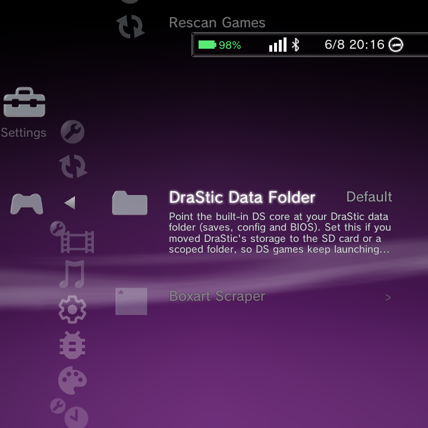
- Guide strip fits small panels. The in-game guide strip (L/R tabs, hints) now shrinks and centres to fit narrow panels like the Brick instead of clipping.Gamepad
- DraStic Save/Load State and L3/R3 rebinding. See drastic-nano above; both are set under Menu > Controls.
- DSi and Minima page-skip and hold-to-accelerate. L1/R1 page-skip through blocks of items in DSi and Minima game lists, and holding a direction now accelerates the scroll like XMB (the carousel keeps its DSi cadence).
- Wrap-around navigation. DSi and Minima lists wrap from the last item back to the first.
Network and Bluetooth
- More responsive Wi-Fi/Bluetooth state. A resident system bridge pushes live Wi-Fi and Bluetooth status to the HUD and reads the settings-screen lists from framework data instead of parsing shell output, so indicators and lists are accurate and fast.
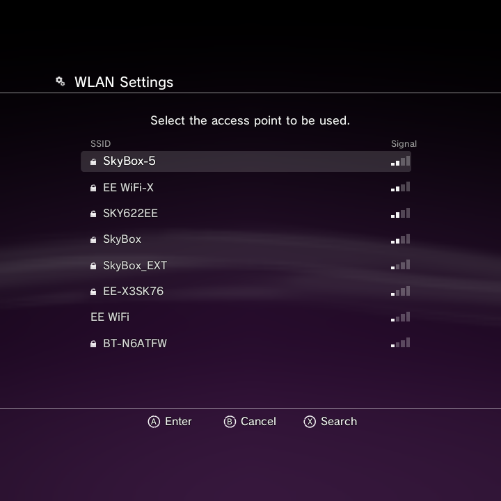
- Reliable Bluetooth discovery and pairing. Device scanning uses native discovery so nearby devices appear reliably. Already-paired devices can be re-registered, pairing codes are shown clearly, and pairing/connecting/scanning now have real timeouts (Bluetooth pairing up to 80 seconds).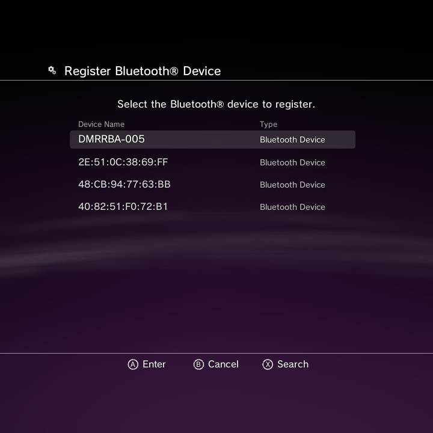
- Wizard fixes. The setup wizard no longer blanks out after idle time, renders in the Minima theme, and shows a clear prompt to turn Wi-Fi on when you scan with the radio off.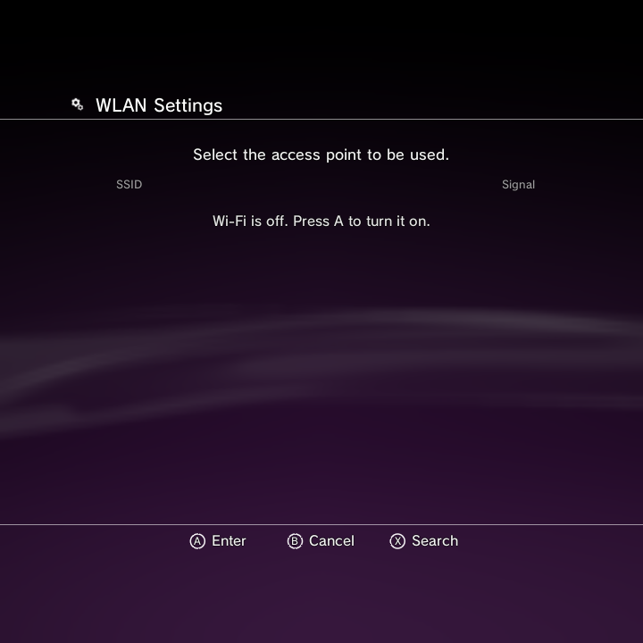
- Change password, Forget, and tricky SSIDs. Changing a saved network's password works directly, Forget properly removes a network, networks with spaces in the name connect, and the password shows in the clear as you type it.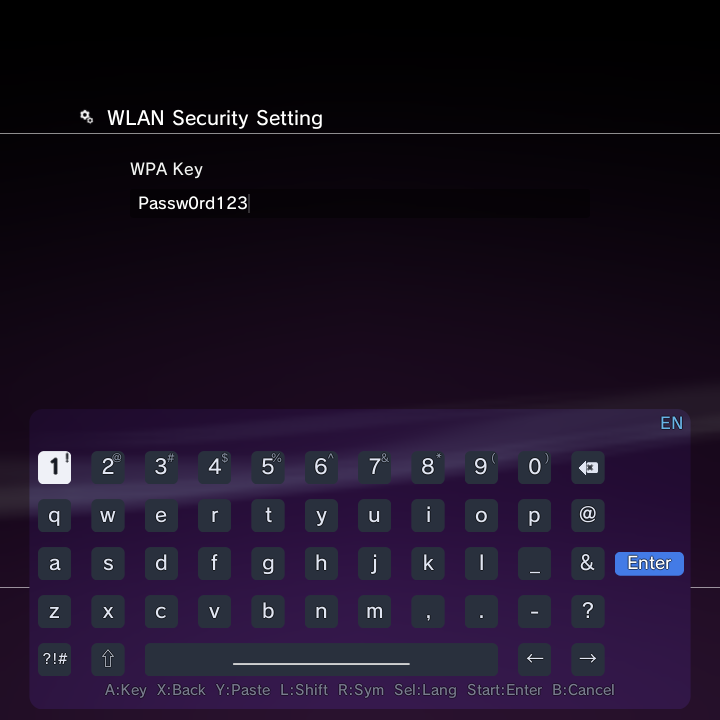
- Bluetooth toggle in System Settings. The Bluetooth and Accessories screen now shows the on/off toggle even when Bluetooth is off.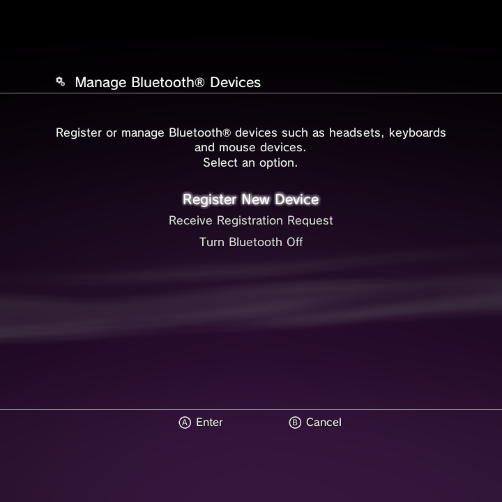
System, RGB and other settings
- USB File Transfer (MTP). Switch the USB connection to File Transfer (MTP) or Charge Only from Settings > USB & Docking, so you can move files to a PC without ADB.
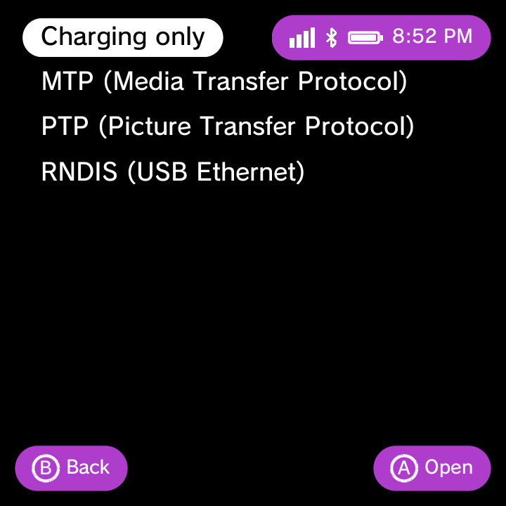
- OSK paste with Y. Press Y on the on-screen keyboard to paste from the system clipboard, handy for long URLs. - RGB fixes. Effect > Off now really turns the LEDs off, solid colours display vividly at full brightness, there's a full-screen d-pad HSV colour picker with a live hex readout, and a Navigation Sounds toggle silences UI sounds while keeping the boot jingle.
- RGB fixes. Effect > Off now really turns the LEDs off, solid colours display vividly at full brightness, there's a full-screen d-pad HSV colour picker with a live hex readout, and a Navigation Sounds toggle silences UI sounds while keeping the boot jingle.
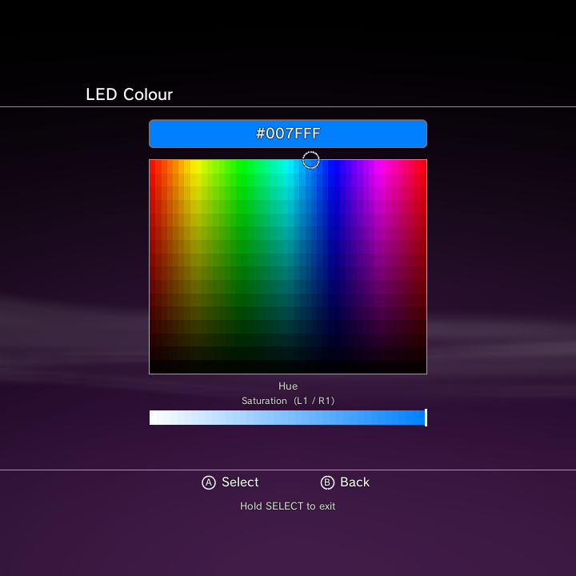
- Auto-granted storage and mic permissions. Apps that declare storage and microphone permissions are granted automatically (still revocable in Settings), and permission dialogs are now controller-navigable. - Widevine L3 compatibility. A Widevine L3 Compatibility toggle in GammaOS Toolbox fixes streaming apps (like the Disney+ error) on uncertified devices.
Full-Android / desktop mode
These apply when you boot into normal Android (desktop/TV) mode rather than Nano.
- Custom notification shade (TvGammaShade). A shade with paged Quick Settings tiles, brightness and volume sliders, live notifications and swipe-up-to-dismiss. Toggle it with the ALL_APPS key. On split-brightness devices it shows a slider per panel.
- Full Android Settings app. The desktop build now ships the complete Settings app instead of the cut-down TvSettings, and the Settings dashboard includes GammaOS Toolbox plus shortcuts to the hardware control apps.
- Screen orientation in normal Android. A GammaOS > Screen Orientation screen (Auto / Landscape / Portrait plus clamping) that persists between Nano and normal Android, and the RG Rotate hardware slider is respected in normal Android too.
- Dual-screen home and per-app primary screen. Desktop mode keeps a launcher on both displays, and dual-screen apps (like Cocoon Shell) can be set to Run on Primary Screen with an auto-detect prompt; the Control Center yields the bottom panel to them.
- Per-display volume. Volume can be set per physical display, with per-display sliders in the shade.